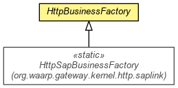

org.waarp.gateway.kernel
Class HttpBusinessFactory
java.lang.Object
 org.waarp.gateway.kernel.HttpBusinessFactory
org.waarp.gateway.kernel.HttpBusinessFactory
- Direct Known Subclasses:
- HttpSapBusinessFactory
public abstract class HttpBusinessFactory
- extends Object

- Author:
- Frederic Bregier
| Methods inherited from class java.lang.Object |
clone, equals, finalize, getClass, hashCode, notify, notifyAll, toString, wait, wait, wait |
factory
public static final HttpDataFactory factory
TempPath
public static String TempPath
HttpBusinessFactory
public HttpBusinessFactory()
initialize
public static void initialize(String tempPath)
- Initialize the Disk support
getNewHttpBusinessRequest
public abstract AbstractHttpBusinessRequest getNewHttpBusinessRequest(SocketAddress remoteAddress,
LinkedHashMap<String,AbstractHttpField> fields,
HttpPage page)
- It returns the AbstractHttpBusinessRequest to use during a new request.
Note that fields given in parameter should be updated according to their values if needed.
- Parameters:
remoteAddress - the remote SocketAddress in usefields - the fields linked hashmap (to preserver order) to set for the new requestpage - source HttpPage
- Returns:
- the AbstractHttpBusinessRequest to use during a new request
addDefaultErrorPages
public static boolean addDefaultErrorPages(HttpPageHandler pages,
String title,
Class<?> clasz)
- Parameters:
pages - title - clasz -
- Returns:
- True if the default error pages are correctly added
Copyright © 2009-2013 Waarp. All Rights Reserved.